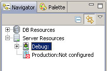
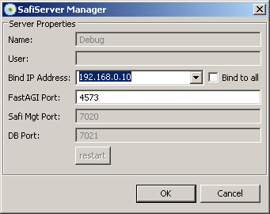
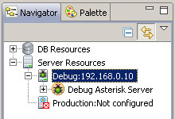
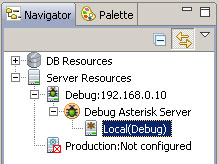
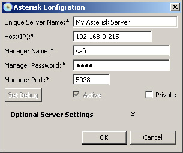
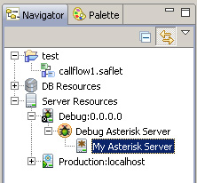
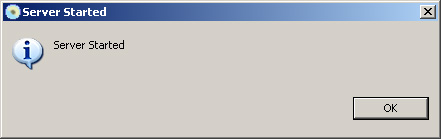
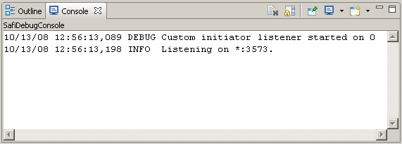

Debug SafiServer
The Debug SafiServer is a special version of the SafiServer that runs inside SafiWorkshop. This limited server allows SafiWorkshop users to test and live-debug Saflets before deploying them to a production SafiServer. In order to use the Debug SafiServer, you must first modify the settings in the Navigation Pane.
HOW TO GUIDE: Setting up the Debug SafiServer in SafiWorkshop
1) In the Navigator Pane; go to the Server Resources node and double click on Debug:

2) This will bring up the Debug SafiServer Manager:

3) Select the proper IP to run the debug server on (or select Bind to all) and Press OK. The Navigation element will now reflect the proper IP:

4) Now expand the Debug Asterisk Server node and double click on the Asterisk server element (Local(Debug)):

5) In the Asterisk Configuration window; fill in the information to connect to your Asterisk server and press OK :

6) The Navigation pane should reflect your the name you set for the Asterisk server:

7) To start the Debug SafiServer; press the Start Debug SafiServer button in the top tool bar (or go to the Safi menu and select Start Debug SafiServer). After the server has started you should see the following message:

And the Console should show the following messages:
